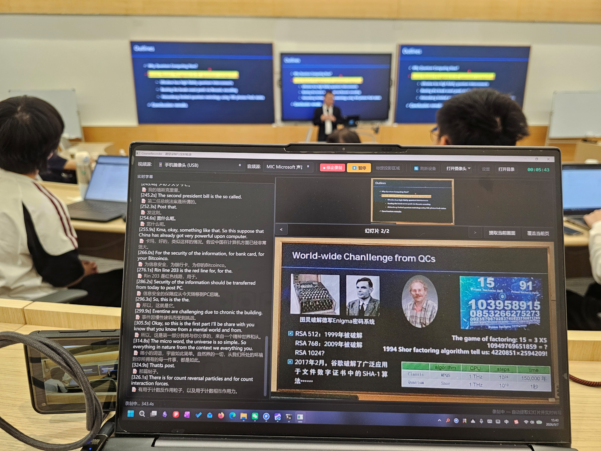
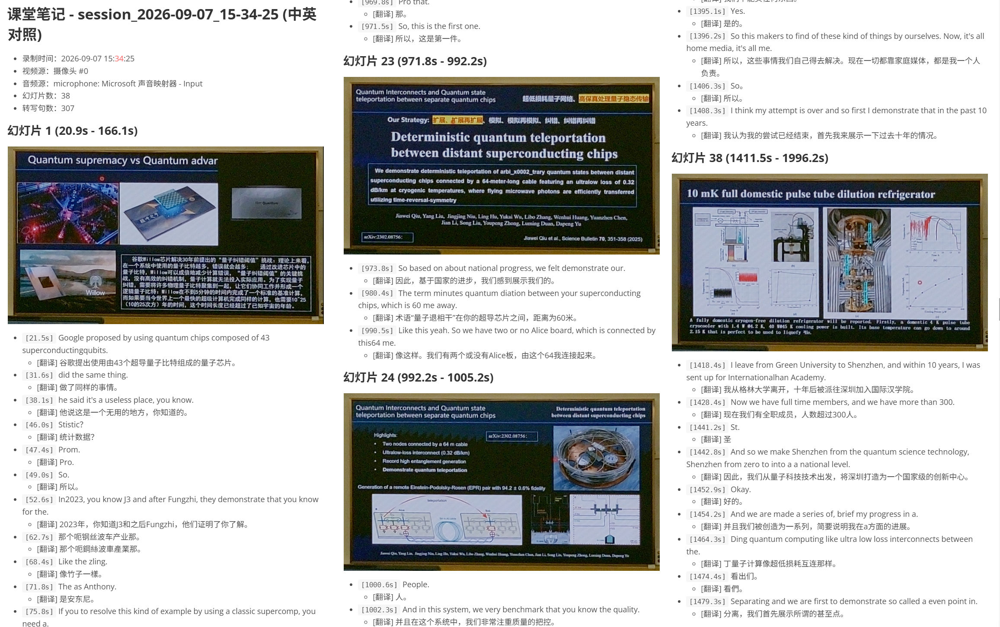

CourseRecorder 是一款面向课堂、讲座与会议的桌面录制工具。把普通摄像头对准投影幕布， 它会自动矫正投影区域、提取幻灯片、实时转写语音， 并生成带时间戳的结构化课堂笔记——全程在本地运行，无需上传任何数据。


从画面采集到笔记生成，一条流水线覆盖录课的全部环节。
斜拍的幕布也能"拉正"成正面图，支持三种模式：
基于感知哈希比对画面，内容变化时才截图。
本地 ASR 引擎，边录边出文字稿，支持中英等多语言。
接入通义千问 Qwen3 小模型，转写后自动译为中文。
一次录制，产出全套课程资料：
不只是摄像头，四种画面来源任选。
四个环节环环相扣，把"一段录像"变成"一份可检索的课程资料"。
摄像头往往无法正对幕布，直接拍到的画面是梯形。CourseRecorder 会先找到幕布的四个角， 再做透视变换，输出一张"正面视角"的清晰图像。
课程中老师会不断翻页。程序持续比对当前画面与上一张已保存的幻灯片， 只有当内容真正发生变化时才截图保存，避免录下一堆重复图片。
音频被切成短窗口送入本地 ASR 模型，转写结果流式追加到时间线， 录制结束即得到完整文稿。所有推理都在本机完成，音频不会上传到任何服务器。
录制结束后，幻灯片与转写文字按时间对齐，自动整合成一份结构化 Markdown 笔记； 若开启翻译，会同时生成中文译本。
从十几块的摄像头到闲置的旧手机，都能变成录课设备。
| 视频源 | 典型分辨率 | 适用场景 | 说明 |
|---|---|---|---|
| USB 外接摄像头 | 1280×720 起 | 固定机位、画质优先 | 推荐 自动协商 MJPG 格式提升帧率 |
| 笔记本内置摄像头 | 1280×720 ~ 1080p | 临时记录、轻量化 | 开箱即用，无需额外设备 |
| 安卓手机（USB） | 最高 3264×2448 | 高画质 板书细节要求高 | 通过 adb 投流，需安装手机端 APK |
| 本地视频文件 | 取决于源文件 | 事后整理已有录像 | 对已有录播视频做幻灯片提取与转写 |
本项目的能力完全建立在优秀的开源模型之上。所有模型均在本地运行， 不涉及任何云端 API 调用。
| 用途 | 模型 | 体积 | 来源 | 许可 |
|---|---|---|---|---|
| 语音转写 默认推荐 |
FunASR SenseVoiceSmalliic/SenseVoiceSmall |
≈ 254 MB | 阿里巴巴 · 达摩院 | Apache-2.0 |
| 语音转写 可选 |
OpenAI Whispertiny / base / small / medium / large |
75 MB ~ 2.9 GB | OpenAI | MIT |
| 文本翻译 可选 |
通义千问 Qwen3-1.7BQwen/Qwen3-1.7B(INT4) |
≈ 1.5 GB | 阿里巴巴 · 通义千问 | Apache-2.0 |
| 文本翻译 省显存 |
通义千问 Qwen3-0.6BQwen/Qwen3-0.6B(INT4) |
≈ 700 MB | 阿里巴巴 · 通义千问 | Apache-2.0 |
CourseRecorder 只是把这些优秀的开源项目组合在了一起。衷心感谢以下项目及其作者的无私贡献：
转写与翻译是算力大头。下面按使用场景给出参考配置—— 没有独立显卡也能用，只是速度会慢一些。
| 档位 | 显卡 / 显存 | 转写引擎 | 翻译 | 预期体验 |
|---|---|---|---|---|
| 纯 CPU | 无独显 / 核显 内存 ≥ 16GB |
SenseVoiceSmall 或 Whisper tiny/base |
建议关闭，或 Qwen3-0.6B (CPU) |
可用，转写有延迟 适合短时录制 |
| 入门 | GTX 1650 / MX550 4GB 显存 |
Whisper small + CUDA |
Qwen3-0.6B INT4 |
转写流畅 翻译可选开启 |
| 主流 推荐 |
RTX 3050 / 3060 6 ~ 12GB 显存 |
SenseVoiceSmall 或 Whisper medium |
Qwen3-1.7B INT4 |
转写 + 翻译同时实时 完整体验 |
| 高性能 | RTX 4070 及以上 12GB+ 显存 |
Whisper large-v3 + CUDA |
Qwen3-1.7B INT4 |
最高精度 长时录制无压力 |
实际占用会随音频窗口长度与并发任务浮动：
我们选择如实列出当前的短板，避免给你不切实际的预期。
转写与翻译模型会让 CPU/GPU 持续高负载，笔记本电池续航明显缩短， 长时间录制时机身发热也比较明显。
USB 摄像头需要经历 DSHOW 驱动初始化、分辨率与像素格式（MJPG）协商等步骤， 从点击"打开摄像头"到出现画面通常需要数秒，切换或重连设备时等待更明显。
多数廉价 USB 摄像头并未通过 UVC 暴露手动控制接口，OpenCV 无法调节对焦、EV、ISO、增益等参数— 这不是程序限制，而是摄像头硬件/驱动本身不支持。
三步跑起来，无需复杂的环境配置。
建议使用 Anaconda 创建独立环境（Python 3.9+）。
conda create -n cr python=3.11 conda activate cr pip install -r requirements.txt
运行主程序，或直接双击 Windows 启动脚本。
python main.py # 或双击 run.bat
选择视频源 → 打开摄像头 → （可选）标定投影区域 → 开始录制。
打开摄像头 → 标定投影区域 → ● 开始录制 → ■ 停止录制